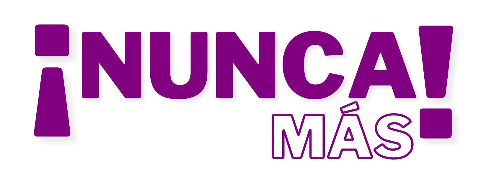

<header>
    <nav>
        <input type="checkbox" id="check"><!-- Checboc que se activa cuando el tamaño se redice a cierto tamaño -->
        <label for="check" class="checkbtn"><!-- Menu de hamburgesa -->
            <i class="fas fa-bars"></i><!-- Icono de Menu de hamburgesa-->
        </label>
        <a href="/" class="enlace">
            <!-- Imagen del logo de NUNCA MAS-->
        </a>

        <ul><!-- Menu de navegacion del sitio -->
            <li class="{{ 'active' if request.path == '/' }}"><a href="/">Inicio</a></li>
            <li class="{{ 'active' if request.path == '/informate' }}"><a href="/informate">Infórmate</a></li>
            <li class="{{ 'active' if request.path == '/test' }}"><a href="/test">Identifica Violencia</a></li>
            {% if current_user.is_authenticated %}
            <li class="{{ 'active' if request.path == '/organizacionesAdmin' }}"><a href="/organizacionesAdmin">Organizaciones</a></li>
            <li class="{{ 'active' if request.path == '/logout' }}"><a href="{{url_for('logout')}}">Cerrar Sesion</a></li>
            {% else %}
            <li class="{{ 'active' if request.path == '/organizaciones' }}"><a href="/organizaciones">Organizaciones</a></li>
            {% endif %}
        </ul>        
        

    </nav>
    <script type="text/javascript" src="https://code.jquery.com/jquery-1.11.0.min.js"></script>
    <script type="text/javascript" src="https://cdn.jsdelivr.net/jquery.slick/1.6.0/slick.min.js"></script>
</header>